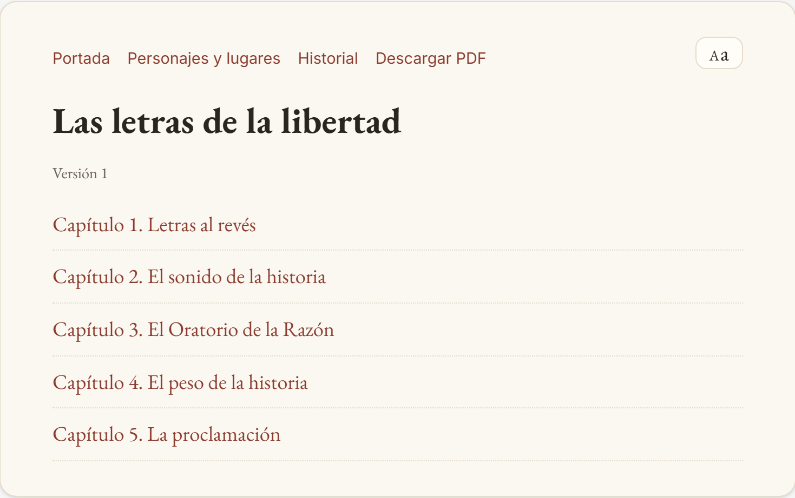
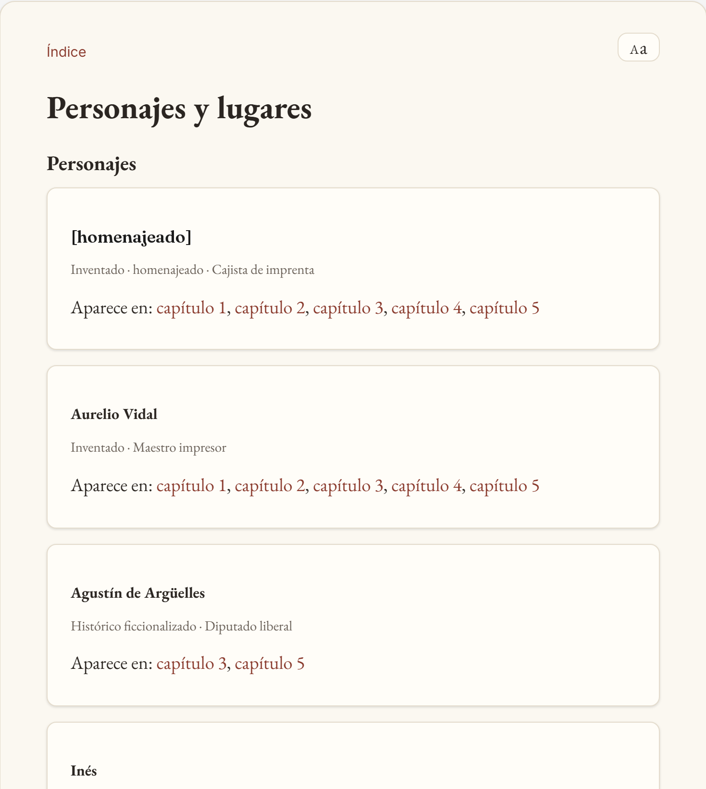
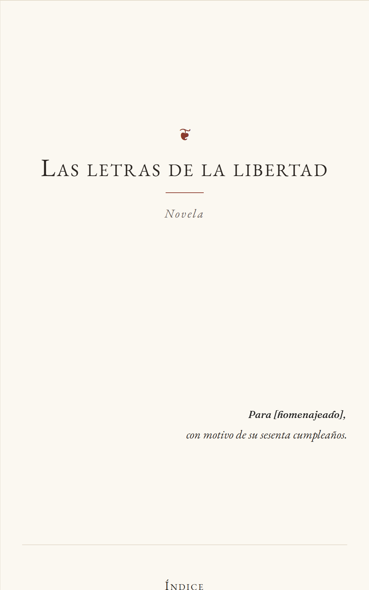
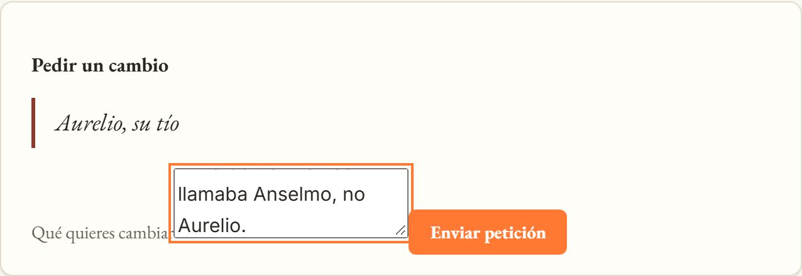

Regalos personalizados para bodas, aniversarios, jubilaciones y cumpleaños redondos
Capítulo IEl encargo
Convertimos a la persona homenajeada en protagonista de un momento histórico real
1
Lo que aporta el comprador
Nombre, época, recuerdos y palabras que no deben aparecer.
2
Lo que hace el sistema
Investiga la época, escribe diez capítulos y verifica cada uno antes de seguir.
3
Lo que recibe el homenajeado
Una novela en web y en PDF, con su dedicatoria.
{{ejemplos_pie}}
Capítulo IIEl problema
Relicario vende emoción, y el regalo personalizado de hoy se queda en la superficie
Quién compra
Hijos que buscan un regalo de jubilación para su padre o su madre
Parejas en un aniversario o una boda
Amigos y familia en un cumpleaños redondo: 50, 60, 70
Qué esperan
✓
Que la persona se reconozca: su nombre, sus manías, sus recuerdos
✓
Que se lea de un tirón, sin tropiezos
✓
Que sea único, y no una plantilla con el nombre cambiado
Dos exigencias igual de importantes: personalización y calidad narrativa mínima.
Capítulo IIEl problema
Ninguna alternativa actual da a la vez personalización, calidad y precio
Alternativa
Personalización real
Calidad narrativa
Precio
Plazo
Libro de plantilla con el nombre insertado
Solo el nombre
✓ Correcta, pero genérica
✓ 30–40 €
✓ Días
Escritor por encargo
✓ Total
✓ Alta
✕ Cientos o miles de €
✕ Semanas
Pedírselo a un chatbot generalista
✓ Alta
✕ Contradicciones y finales abruptos
✓ Casi gratis
✓ Minutos
{{producto}}
✓ Recuerdos + época documentada
✓ Validada capítulo a capítulo
✓ {{coste.pvp_iva_eur}} €
✓ Horas
Un modelo generalista escribe bien una escena; falla en la coherencia de diez capítulos: repite frases, se contradice y cierra de golpe. Ese es el hueco que cubre el harness: no escribimos mejor que el modelo, lo controlamos capítulo a capítulo.
Capítulo IIIConfiguración
Una entrevista corta produce un brief validado con schema
Comprador
Premisa libre y, si quiere, un texto pegado
Entrevistador · agente
Pregunta solo lo que falta
Brief
Modelo Pydantic validado
Gate de Intake
El autor lo aprueba antes de seguir
Datos que faltan
El entrevistador pregunta por los campos vacíos del brief.
Contradicciones
4 detectores de código: edad y época, nacimiento y evento, tono y época, dato y palabra prohibida.
Texto libre = no confiable
Va a cuarentena; solo salen filas tipadas: persona, lugar, fecha, objeto, anécdota.
Lo que no debe aparecer
Palabras prohibidas por novela y por destinatario.
brief 01 · Cádiz, 1803–1806 (extracto)
homenajeado:
rol_epoca: armador de navío mercante
ocasion: jubilación tras cuarenta años
mundo:
periodo: { inicio: 1803, fin: 1806 }
evento_ancla: la batalla de Trafalgar
obra:
palabras_prohibidas:
novela: [pirata, tesoro]
destinatario: [naufragio]
Capítulo IIILectura
Se lee en web o en PDF, y un cambio se pide seleccionando el texto

1
Índice navegable, con marca en los capítulos que cambiaron

2
Personajes y lugares desde la story bible, enlazados a cada capítulo

PDF
3
Portada con dedicatoria personalizada

4
Se selecciona un fragmento, «pedir cambio» y pasa al gate de Regeneración
Web y PDF salen de la misma ruta de lectura: Playwright imprime la web, así que nunca divergen. Toda versión anterior se conserva.
Capítulo IVArquitectura
Seis fases, nueve roles especializados y un humano en cinco puntos de control
gate humano
gate humano
gate humano
gate humano
sin gate: decide el juez
gate humano
1
Intake
entrevistador
extractor de intake
2
Investigation
investigador · única salida a internet
verificador
3
Plotting · planner
arquitecto → canon + escaleta
sello del corpus
4
Writing
escritor (writer)
editor (critic)
extractor de capítulo
5
Publication
juez (LLM-as-judge)
Lean · render_visual
6
Regeneration
cambios del lector: escritor + editor
Orquestación: LangGraph con estado explícitoAgentes: Claude Agent SDK, todos en Haiku 4.5Estado: un fichero SQLite por novela
Planner = arquitecto · Writer = escritor · Editor/critic = editor + juez, separados: quien escribe no aprueba. El editor repara dentro del bucle; el juez mide fuera y no toca el texto.
Capítulo IVArquitectura
Los validadores son nodos del grafo: ningún agente puede saltárselos
WriteChapter
escritor
Validate
Python · coste cero
Extract
extractor + Lean
ApproveChapter
Fail
reintentos agotados → para e informa
Repair
el editor emite un parche
máx. 2 reintentos, contador compartido
Checkpoint
misma transacción que el capítulo aprobado
siguiente capítulo
Las aristas leen booleanos calculados en Python, no la opinión de un modelo
Primero lo gratis: longitud, nombres, prohibidas. Luego la llamada
Si el proceso muere, se reanuda desde el último capítulo aprobado
Capítulo IVContexto y story bible
El writer no busca su contexto: lo recibe, acotado a 12.000 tokens
Límite de 100.000 tokens concurrentes garantizado por construcción: grafo secuencial, peor caso 45.000 (investigador).
Capítulo IVPor qué este diseño
Tres decisiones explican el resto del sistema
1
Validar no es opcional
Validadores como nodos; tools con schema Pydantic; toda salida de rol pasa schema_guard.
2
El estado vive en un solo sitio
Un SQLite por novela: checkpoint y capítulo en la misma transacción. Ramificar es copiar el fichero.
3
Nada se sobrescribe
Capítulos inmutables y un manifiesto por versión: la anterior se conserva por estructura.
Para el desarrollo con Claude Code
CLAUDE.md + AGENTS.md: instrucciones del repoSkill continuity-checkHook PostToolUse: valida el capítulo editadoHook PreToolUse: policy de palabras prohibidasRetries con límite: 2 por capítulo · 5 huecos por Plotting · 2 rechazos del juez
Los hooks y la skill usan exactamente el mismo Core Domain en Python que los nodos del grafo.
Capítulo VValidación
Cuatro familias de validadores, cada una en su punto del harness
revision_humanala misma rúbricapersona {{revision_humana.persona|2}} · juez {{revision_humana.juez|2}}, novela de {{revision_humana.novela}}
Formal de la historiaLean 4
I1–I4avisa
I1–I4bloquea
I1–I4bloquea
Formal del sistemaTLA+
TLCen desarrollo
Juez: continuidad, arco, coherencia de personajes, ritmo, tono, prosa, naturalidad de la personalización y autenticidad de época. Todos envían su resultado a Langfuse como score.
Capítulo VEvaluación
Diez novelas publicadas: lo que un validador cazó se reparó antes de publicar, y dos fallos se le escaparon
Novela · ocasión
Caps.
Estado
Intentos
nombres exactos
longitud
prohibidas
Lean
Juez media / continuidad
Tokens
Coste
{{evals.caps_ok}} / {{evals.caps_total}}
capítulos publicados de las evals pasan los cinco deterministas y Lean
{{evals.media_juez|2}}
media del juez en las {{evals.versiones_publicadas}} versiones publicadas
✕→✓ ×nn rechazos reparados!aviso de Lean en la escaleta
Haiku 4.5 en los 9 roles · evals en batch, sin gates · referencias (fondo gris): sin score por capítulo, cuentan las incidencias.
Capítulo VEvaluación · tuning
{{tuning.titulo}}
{{tuning.antes_titulo}}
{{tuning.despues_titulo}}
{{tuning.barras_titulo}}
{{tuning.pie}}
Capítulo VValidación formal
Lean vio una protagonista que existía antes de nacer; ni el juez ni los validadores de texto lo vieron
Novela de {{lean.novela}} · escaleta y prosa frente a la fecha de nacimiento
✕ no venombres_exactos y el resto de deterministas: no miran fechas de vida
✕ no veJuez ({{lean.juez|2}}): vio una edad incoherente, no el nacimiento imposible
✓ la veLean (lake build + verificar): exit 1, con los eventos culpables
theorem I1_NadieAntesDeNacer :
∀ e ∈ eventos, ∀ p ∈ e.participantes,
p.nacimiento ≤ e.momento := by decide
-- lake exe verificar → exit 1-- I1 falla: 9 escenas, 26 eventos
Cuando se generó, la cronología solo avisaba en el gate de Plotting y la novela se publicó. Hoy Lean bloquea la publicación, y el canon usa una fecha de nacimiento de época para el personaje del homenajeado.
{{rt09}}
Capítulo VValidación formal · TLA+
TLC agota todos los estados del harness sin violaciones, después de cazar tres errores de diseño
✓NoPublishUnvalidated · nunca se publica un capítulo sin validar
✓ResumeIsExactlyOnce · reanudar no duplica ni pierde capítulos
✓RetriesBounded · los reintentos nunca superan el límite
✓CorpusSelladoNoSeToca · tras el sello, nadie escribe en el corpus
✓PreviousVersionPreserved · la versión anterior se conserva
✓Termina (liveness) · toda generación publica o para con error
Control de vacuidad: con weak fairness en vez de strong, TLC viola Termina; la comprobación no es vacía.
Tres contraejemplos que cambiaron el diseño
1 · ResumeIsExactlyOnce
Rehacer el gate de Writing se trataba como pasada inicial y duplicaba capítulos. Cambio: acción RehacerWriting.
2 · Termina
El juez podía rechazar para siempre: bucle infinito. Cambio: tope de 2 rechazos y arista a Fail.
3 · Termina
Weak fairness no bastaba: el autor podía rehacer eternamente. Cambio: strong fairness en la especificación.
Los nodos de LangGraph y las acciones TLA+ se llaman igual; un test compara las aristas del StateGraph con la definición Aristas.
Capítulo VObservabilidad
Cada novela es una sesión en Langfuse: tokens, coste y latencia por llamada
{{langfuse.etiqueta}}
{{langfuse.nota_rt08}}
Coste por fase de esa novela · {{langfuse.novela}} · fase_run
Capítulo VIGuardrails
Lo que no debe aparecer no aparece y queda registrado, incluso cuando el guardrail se pasa de estricto
1
«…no dejaría oro a sus herederos, sino el tesoro que permanecería eternamente…»
Capítulo 2, intento 1 · guardrail_prohibidas · nivel novela
2
El capítulo vuelve al editor con la incidencia
3✓ El intento siguiente sale sin el término
Lo que encontró el red-team (RT-07)
De 4 rechazos reales, 1 era la palabra. Los otros 3 eran raíces dentro de otras palabras: «respiratorio» por «pirata», «despidiéndose» por «despido», «suspensión» por «suspenso». Uno detuvo una novela.
Mitigación propuesta: que el aviso nombre la palabra que saltó y que la coincidencia por raíz avise en vez de bloquear.
Datos personales
El único rol con internet nunca recibe el nombre, la fecha ni los recuerdos del homenajeado: regla Semgrep y guarda de PII sobre cada prompt.
Injection
Una carta con 5 órdenes inyectadas: 0 llegaron al texto. Al writer solo llegan filas tipadas.
Audit log
Cada decisión de policy, de gate y cada edición humana, con actor, momento, antes y después.
Niveles de la lista: global · novela · destinatario, guardados en SQLite. Normaliza mayúsculas, acentos, plurales y derivados.
Capítulo VIIPropuesta económica
Cada novela cuesta {{coste.total_eur|2}} € y se vende a {{coste.pvp_iva_eur}} €: margen del {{coste.margen_pct|1}} %
Coste unitario por novela · 10 capítulos · {{coste.novelas_mes}} novelas/mes
Tokens (Haiku 4.5) · medido
{{coste.tokens_eur|2}} €
Revisiones del lector · {{coste.revisiones_media|1}} de media × {{coste.revision_eur|2}} €
{{coste.revisiones_eur|2}} €
Supervisión editorial de gates · {{coste.supervision_min}} min × {{coste.supervision_eur_h}} €/h
PVP con IVA · {{coste.pvp_sin_iva_eur|2}} € sin IVA · {{coste.revisiones_incluidas}} revisiones incluidas
{{coste.margen_eur|2}} €
margen por novela ({{coste.margen_pct|1}} %)
Tokens medidos (total_cost_usd del Agent SDK, sumado por fase en fase_run) en tres novelas de diez capítulos: Cádiz 1803–06 {{coste.medidas.0.usd|2}} $ ({{coste.medidas.0.nota}}) · Santiago 1180–88 {{coste.medidas.1.usd|2}} $ · Madrid 1787–89 {{coste.medidas.2.usd|2}} $ ({{coste.medidas.2.nota}}). Media {{coste.media_usd|2}} $ ≈ {{coste.tokens_eur|2}} € (1 $ ≈ {{cambio_usd_eur|2}} €). Con las cinco novelas de diez capítulos ya publicadas (Madrid 1787–89 terminó en 3,68 $, Barcelona 2,99 $, Valencia 2,76 $), la media es 3,07 $: confirma la cifra. Langfuse registra el mismo coste que el arnés: {{coste.langfuse_prueba_usd|4}} $ en los dos en la novela de prueba (It-39) y 3,621496 $ en la de Cádiz. Revisión medida en una rama de la novela de Cádiz, 1805: {{coste.revision_usd|2}} $ ≈ {{coste.revision_eur|2}} €, {{coste.revision_min}} min (la de Madrid, 1858, costó {{demo.coste_usd|2}} $). Supervisión, infraestructura y tarifa son estimaciones.
El coste dominante no son los tokens: es la supervisión humana de los gates ({{coste.supervision_eur|2}} € de {{coste.total_eur|2}} €).
Capítulo VIIPropuesta económica
El margen aguanta una subida del 50 % en tokens; lo que hay que proteger son las revisiones
El valor retirado se propaga a {{demo.celdas}} celdas de escaleta y canon
5 · PUBLICATION
Versión {{demo.version_nueva}} publicada; la 1 y la 2, intactas
Lean ✓ · render_visual ✓
Índice web de la versión {{demo.version_nueva}}, con los capítulos cambiados marcados
Historial: versiones 1, 2 y 3
{{demo.coste_usd|2}} $
la revisión · {{demo.coste_fases}}
{{demo.minutos}} min
de la petición a la versión {{demo.version_nueva}}
Se previeron {{demo.previstos}}; al final se reescribieron los {{demo.reescritos_final}}: el primer intento del capítulo 3 se pasó de longitud ({{demo.cap3_palabras|0}} palabras, máximo {{demo.cap3_maximo|0}}) y hubo que repararlo.
Con diez capítulos ({{demo.apoyo.novela}}): {{demo.apoyo.texto}}. Es una {{demo.apoyo.nota}}.
12345678910
■ nuevo · ■ revalidado a coste cero · ■ intacto
Capítulo VIIICierre
Lo que queda por hacer antes de vender la primera novela
Riesgos
Hoy el modelo se usa a través de una sesión de Claude Code: producción necesita API propia con límites de throughput
El juez y el writer son el mismo modelo: sesgo; se compensa con revisión humana y el tope de continuidad
Sin el toolchain de Lean, la cronología se evalúa en Python: la instalación de producción debe llevar lake
El coste de tokens es una estimación en cliente del SDK, no una factura
Las fechas vitales de los personajes históricos que no están en el corpus las pone el arquitecto sin fuente (RT-09)
Siguientes pasos
1
Piloto con 50 novelas reales de clientes de Relicario
2
Fechas vitales de los personajes históricos solo desde el corpus sellado: la mitigación determinista de RT-09 va primero, porque «determinista antes que modelo»
3
Un revisor de canon y escaleta, como nodo antes del gate de Plotting y no como herramienta, que mire trama, arcos y fechas; y el arquitecto y el juez en un modelo mayor. Opcional: una «edición premium» con precio aparte, a definir con Relicario, en vez de subir el precio base